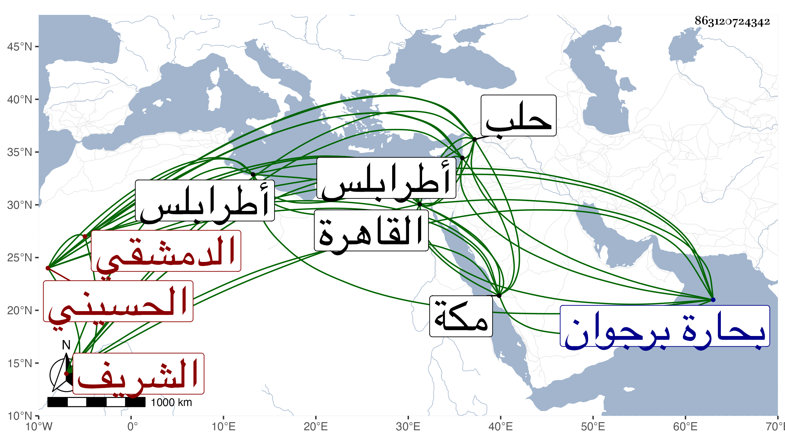

0902Sakhawi.DawLamic.ITO20230111-ara1.EIS1600.863120724342
Biography ID: 863120724342
185
محمد بن محمد بن جعفر الشريف الشمس الحسيني الدمشقي . قال شيخنا في انبائه : مات في رمضان سنة تسع بالقاهرة وكان من صوفية سعيد السعداء بل جاور بمكة عدة سنين ثم ولي قضاء طرابلس مدة طويلة مع كونه لم يكن يعرف شيئا من العلم حتى أنه قال في الدرس وهو قاض عن سعيد أبي جبير ، لكنه كان كثير الرياسة والحشمة ومكارم الاخلاق وتقريب العلماء وللشعراء فيه مدائح ، ثم نقل إلى قضاء حلب فاستمر فيها نحو عشر سنين وعزل منها في سنة أربع وثمانمائة بجمال الدين الحسفاوي ثم أعيد واستمر حتى مات إلا أن الأمير جكم كان أرسل بعزله فوصل الخبر وقد مات ، وهو في عقود المقريزي وأورد عنه حكاية وقال أنه كان جارنا يعني بحارة برجوان من القاهرة وما علمت عليه إلا خيرا وكان خادم الصوفية بسعيد السعداء .
